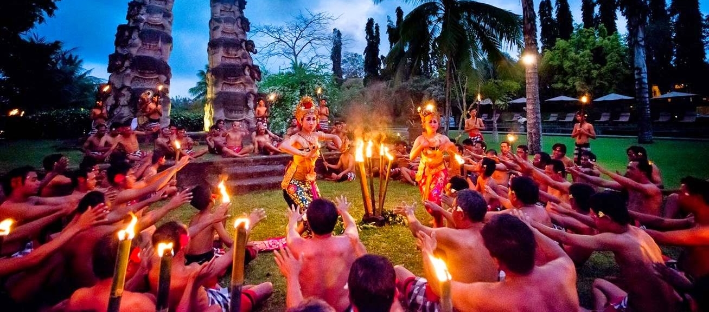
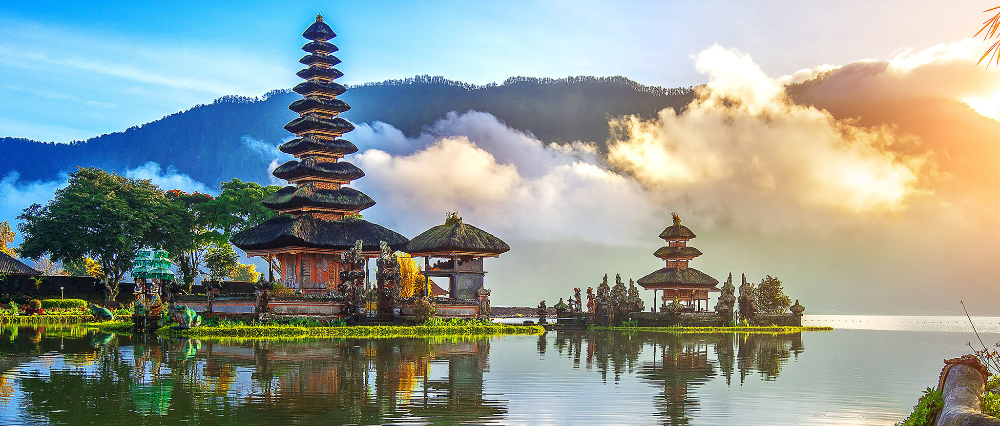

3 Days/2 Nights Itinerary
-
Day 1
Uluwatu, Tanah Lot Temples, and dinner at Seminyak
Try to arrive early since you only have 3 days to visit this beautiful island, and stay in one of the strategic places in central or south of Bali. Hire a car in advance and use it to head straight to two of the most famous temples in Bali. First head to Uluwatu Temple and double back to Tanah Lot Temple, in time to enjoy the amazing sunset there. If you are also in time, catch the famous Kecak Dance here that is set against the backdrop of this beautiful temple. End the day with a good dinner at Ultimo in Seminyak.
-
Day 2
Ubud, rice fields, beach and seaside dining
Ubud is the place one must explore when in Bali. Walk around the city would be a delight, there are many boutiques to shop around, spas and massages to pamper yourself and art or attractions to visit. Next, head out to the north to the neighbor town of Tegalalang to find classic rice terraces of Asia. Many tourists also like to stay in Ubud * as it is quite central to many of the attractions around Bali and yet away from the crowd in Kuta. After visiting Ubud, choose one of the beaches in Bali and get some swim and tan, popular choices are Balangan or Padang-padang beach. At sunset, head to Jimbaran and enjoy a seaside romantic dining.
-
Day 3
Temple, shopping, or beach
Depending on how much time you have left, you may squeeze in one of two more things before heading to the airport for your departure. If you still want to explore more of Bali’s amazing temples, then I would recommend the Pura Ulun Danu Bratan, a beautiful mirrored temple by the lake. Or if you would prefer to pack in some last-minute shopping, there are few shopping places in Bali. Or if you still have not enough of the beaches, you know where to find more beautiful beaches in Bali to hang out.
7 Days/6 Nights Itinerary
-
Day 1
Arrival and Kuta

Arrival at Denpasar International Airport. Plan early how you would get to your hotel. Our Top 10 Best Areas to Stay in South & Central Bali would be able to help you to choose the most suitable place for you. Without wasting much time, head to Kuta beach and get some suntan and swimming in. If you have the time, you may sneak in some surf lessons here. After that, check out Kuta’s vibrant nightlife. There are also of course a lot of selection of places to stay in Kuta.
-
Day 2
Uluwatu and Tanah Lot Temple
Uluwatu Temple and then Tanah Lot Temple, in time to enjoy the amazing sunset there. If you come in time, you may also catch the famous Kecak Dance with the backdrop of the amazing temple. End the day with a good dinner at Ultimo in Seminyak.
-
Day 3
Beach day
After the hectic day from yesterday, it is a good time to check out some of the best beaches of Bali. Choose one to your delight and head there for some relaxation. Chill on white sand beaches, swim or snorkel in clear blue sea and get some holiday tan. One of the few you can check out is Balangan beach or Padang-padang beach. Toward evening head to Jimbaran for a seaside romantic dinner. If you are in this area, don’t forget to check out the rock bar at RIMBA Jimbaran Bali by AYANA *
-
Day 4
Explore Ubud and the rice fields
Ubud is the place one must explore when in Bali. Walk around the city would be a delight, there are many boutiques to shop around, spas and massages to pamper yourself and art or attractions to visit. Next, head out to the north to the neighbor town of Tegalalang to find classic rice terraces of Asia. Imagine picturesque backdrop along the way as you explore Bali whether in a car or on a bike flanking by rice fields as far as the eye can see. Many tourists also like to stay in Ubud as it is quite central to many of the attractions around Bali and yet away from the crowd in Kuta.
-
Day 5
Northern Bali
Head far north of Bali today to explore that area. First of all, wake up early to catch the dolphins at Lovina and after, chill at the black sand beach. Then head on to the underrated Pura Ulun Danu Bratan, an impressive temple by the lake. This is one of the most important temples in Bali. After that, you can head further west to Mount Batur for a view or if you prefer a hike up and then end the northern loop at the Besakih Temple.
-
Day 6
Relaxation or Outdoor sports
Depending on how you feel you may want to check out the many outdoor sports in Bali, such as white water rafting, freediving, canyoning, surfing and bungee jumping. If a relaxing last day is what you are after, then head on to other of the many beautiful beaches of Bali and sun tan your day away.
-
Day 7
Last minute shopping
Check out the few places to shop like Kuta Art Maket or Sukawati Art Market if you still have time before heading to Denpasar for your flight out.